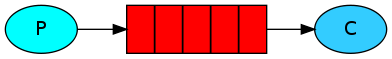
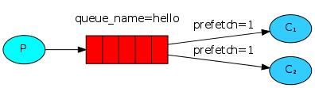

RabbitMQ特性
-
支持多种消息协议（Multi-protocols）
支持AMQP，STOMP，MQTT，HTTP和WebSockets -
灵活的路由，多种交换类型（Flexible routing, multi-Exchange）
后面的工作模式小节会详细阐述RabbitMQ几种常见的模式 -
消息队列发送确认
-
多语言，跨语言编程（Go，Python，Java）
RabbitMQ支持多种协议，只要实现特定协议的生产者和消费者，都能和RabbitMQ通信，对语言没有限制 -
集群及分布式部署
RabbitMQ支持集群和高可用，而且通过插件支持Federation特性。所谓Federation特性，是指有不同的用户和 vhosts的broker，而且各broker所属RabbitMQ版本可以不一致。名词含义见RabbitMQ基本概念 -
丰富的工具和插件
-
提供基于HTTP的管理和监控界面API
RabbitMQ基本概念

-
Message
消息，消息是不具名的，它由消息头和消息体组成。 消息体是不透明的，而消息头则由一系列的可选属性组成， 这些属性包括routing-key（路由键）、priority（相对于其他消息的优先权）、delivery-mode（指出该消息可能需要持久性存储）等。 -
Publisher
消息的生产者，也是一个向交换器发布消息的客户端应用程序。 -
Exchange
交换器，用来接收生产者发送的消息并将这些消息路由给服务器中的队列。Exchange有四种类型：direct，fanout，topic，headers。 后面的工作模式 小节会针对四种类型单独分析。 -
Binding
绑定，用于消息队列和交换器之间的关联。一个绑定就是基于路由键将交换器和消息队列连接起来的路由规则，所以可以将交换器理解成一个由绑定构成的路由表。 -
Queue
消息队列，用来保存消息直到发送给消费者。它是消息的容器，也是消息的终点。一个消息可投入一个或多个队列。消息一直在队列里面，等待消费者连接到这个队列将其取走。 -
Connection
网络连接，比如一个TCP连接。 -
Channel
信道，多路复用连接中的一条独立的双向数据流通道。信道是建立在真实的TCP连接内地虚拟连接，AMQP命令都是通过信道发出去的， 不管是发布消息、订阅队列还是接收消息，这些动作都是通过信道完成。因为对于操作系统来说建立和销毁 TCP 都是非常昂贵的开销，所以引入了信道的概念，以复用一条 TCP 连接。 -
Consumer
消息的消费者，表示一个从消息队列中取得消息的客户端应用程序。 -
Virtual Host
虚拟主机，表示一批交换器、消息队列和相关对象。虚拟主机是共享相同的身份认证和加密环境的独立服务器域。 每个vhost本质上就是一个mini版的RabbitMQ服务器，拥有自己的队列、交换器、绑定和权限机制。vhost是AMQP概念的基础，必须在连接时指定，RabbitMQ默认的vhost是/。 -
Broker
表示消息队列服务器实体。
RabbitMQ工作模式
1, simple模式

创建队列时，需要指定一个Queue name（队列名），Publisher通过Queue name和Queue绑定。
2, work模式

比模式1多了几个Consumer。需要指定队列名。其实模式1，2是一种特例，它们Exchange为""（默认的匿名Exchange）
3, publish/subscribe发布订阅(共享资源)
上面的X指Exchange。Exchange type是fanout，Routing key是""。 通常不需要指定Queue name（匿名队列），由Exchange 根据Routing key确认分发到哪个Queue。 由于Routing key为空，所以这种模式消息会被分发到所有的Queue。通常由Consumer创建相应的Queue，并绑定到相应的Exchange。
4, routing模式
Exchange type为direct，Routing key不为空。和第3种模式相比，Routing key会指定一个字符串。 Exchange根据Routing key精确匹配，和对应Routing key绑定的Queue会收到相应消息。 如果一个消息的Routing key和任何Binding都不匹配，就会被丢弃，避免了Queue的拥塞。这也是提倡Consumer创建Binding的原因， 因为Consumer最清楚自己需要哪一种类的消息。
5, topic模式

Exchange type为topic，Routing key支持模式匹配, 匹配规则为"*"匹配单个单词，"#"匹配多个单词。
Routing key以点分割单词，如"stock.usd.nyse"。
结合上图，Routing key被设置为"quick.orange.rabbit"的消息将被发到两个Queue。"quick.orange.fox"消息
将仅仅发送到第一个Queue，而"lazy.brown.fox"仅仅发送到第二个Queue。"lazy.pink.rabbit"虽然匹配第二个Queue
两次绑定，但是第二个Queue仍然只会收到一次。
6, headers模式
headers模式很像topic模式，只是基于headers代替Routing key来匹配Binding。如上图，x-match字段是必须的，它有 all和any两个值。all标识headers的其它字段都得匹配，any标识headers的其它字段至少匹配一个。header能基于integer或者hash构造， 而不仅仅是string。
7, rpc模式

rpc模式严格说只是其他模式的应用。如上图，C端利用模式2（当然也可以是其他模式）发起一个rpc调用，并通过设置replay_to参数，
告诉S端Response时的Queue name，然后S端就能通过模式2返回Response了。
基于RabbitMQ实现rpc调用需要解决如下问题：
- S端执行过慢，或者负载过大时，支不支持扩展。利用模式2显然是能支持多S端工作的。
- 确保Request和Response仅仅一个消息。如图使用唯一Queue传递消息，能保证，但是代码层面扔需要做相应检查。
- C端需要处理没有S运行情形。可以使用Publisher Confirm保证消息是否被正常分发。
- C端需要处理调用超时无应答问题。
- 如果S端执行挤过异常，如何和C端确认传输的消息。
- 消息非法的检测。
综上，第1，2种模式可归为一类，它们使用未命名Exchange（默认""），Publisher直接将消息发送到Queue。他们分发消息的路由方式，是Publisher通过Queue name（队列名） 直接绑定Queue。这两种方式有很明显的缺点。首先它们Queue只有一个，不好扩展。其次消息分发不够灵活，如不能根据消息的主题决定分发方式。
第3，4，5模式可以归为一类，他们通过Exchange分发消息，不同的是Exchange type不同。这很好的解决了1，2种模式的缺点。
rpc模式严格上只是RabbitMQ其他模式的应用，下面的表对比了前5种模式。
| 模式名 | Exchange | Routing key | 特点 |
|---|---|---|---|
| simple模式 | "" | 使用Queue name | 单一Queue，单一P，C |
| worker模式 | "" | 使用Queue name | 多个worker |
| publish/subscribe模式 | type值为fanout | "" | 需要绑定Exchange和Queue，即创建Binding。多个Queue都会收到消息 |
| routing模式 | type值为direct | 需要指定 | 精确匹配, 需要绑定Exchange和Queue，即创建Binding |
| topic模式 | type值为topic | 需要指定 | 模式匹配, 需要绑定Exchange和Queue，即创建Binding |
RabbitMQ和Kafka对比
- Kafka支持消息回溯，RabbitMQ不支持。
- RabbitMQ支持消费者推，而Kafka不支持。
- Kafka消息被有序的追加到每个主题消息分区。
- Kafka消费者通过维护分区的偏移（或者说索引）来顺序的读出消息，然后消费消息。
- rabbitMQ支持对消息的可靠的传递，支持事务，不支持批量的操作。
- kafka具有高的吞吐量，内部采用消息的批量处理，zero-copy机制，数据的存储和获取是本地磁盘顺序批量操作，具有O(1)的复杂度，消息处理的效率很高。